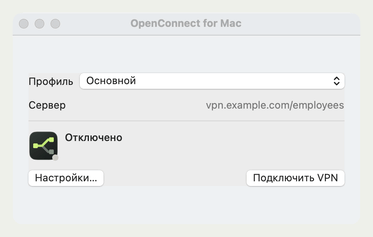

OpenConnect for Mac
Рабочий VPN на Mac
Клиент для подключения к AnyConnect-совместимому VPN вашей организации. Вход через SSO, выбор сетей и DNS, управление из строки меню.
УстановитьИсходники на GitHub ↗
macOS 14.4+ · доступ к AnyConnect-совместимому шлюзу

SSO: заполнение нескольких шагов входа
Настройте заполнение веб-формы один раз. Пароль и одноразовый код поступают из Связки ключей, KeePassXC или своей команды. Для Cisco single-sign-on-v2 используется окно WebKit.
Рабочие сети через VPN, остальное — обычным подключением
В туннель идут только сети из твоего профиля. Остальное, включая домашнюю сеть, идёт обычным путём. Сети переключаются прямо в меню, без переподключения.
Умный DNS: свой и корпоративный сразу
Домены компании спрашивают корпоративный DNS, всё остальное — твой обычный. Зоны можно переключать в меню. Системный DNS не подменяется.
Нативное меню macOS и пауза
Интерфейс на SwiftUI. Пауза снимает маршруты и DNS-зоны приложения, сохраняя VPN-сессию; возобновление возвращает их. Профили и журналы открываются из меню.
Переживает сон и смену сети
Супервизор сам восстанавливает соединение после сна, смены Wi-Fi и обрыва связи и не открывает окно входа без спроса.
У OpenConnect уже есть графический клиент — OpenConnect GUI. OpenConnect for Mac я делаю под свой повседневный сценарий: многошаговый SSO-вход в WebKit, переключение отдельных сетей и DNS-зон, пауза без завершения сессии и готовый профиль от коллеги.
Установка
/bin/bash -c "$(curl -fsSL https://raw.githubusercontent.com/ValeraGin/openconnect-for-mac/main/install.sh)"
Команда загрузит установщик с GitHub. Он предложит поставить недостающие инструменты Apple и Homebrew, установит OpenConnect for Mac и запустит приложение. Для системного помощника понадобится пароль администратора Mac.